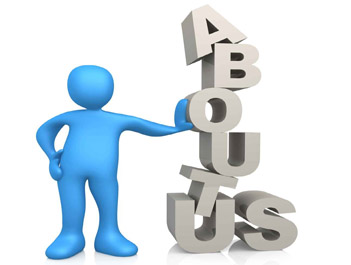

Who We Are ?
 We take this opportunity to introduce ourselves as one of the leading Mechanical and Structural fabricator and erector in Nepal, having a fully-equipped facility extending over 12500 m2 in Chainpur-1, Chitwan with a total built up area of 1500 m2. Safe Steels has gained this shape after being merged with the pioneer industry of the sector: Nepa Engineering Works, a four decade experienced company, situated in Nepalgunj. The factory is equipped with modern and advanced technological facility for the fabrication and galvanization of steel structures with capacity of 5000 metric tons per year. The merit of our company is to offer a comprehensive service (Design, Fabrication, Galvanization, Supply and Erection) in the field of Mechanical and Steel Structure Engineering Services.
Our Expertise
- Design, fabrication and erection of Steel Truss/Plate Girder Bridges, steel parts of pedestrian bridges etc
- Fabrication and erection of warehouses and shades
- Fabrication and erection of steel structures of power/cement plants, buildings
- Heavy structural girders for bridges and towers, hydraulic structures, penstock pipes etc
- Site erection of steel structures
- Galvanization of all steel sections
Our Vision
With relentless focus on people, technology and business systems, Safe Steels aims to become a leader in Steel Fabrication Sector. By upholding the highest standards of business conduct, we are committed in providing customized products to our clients and their ever changing needs. Read More